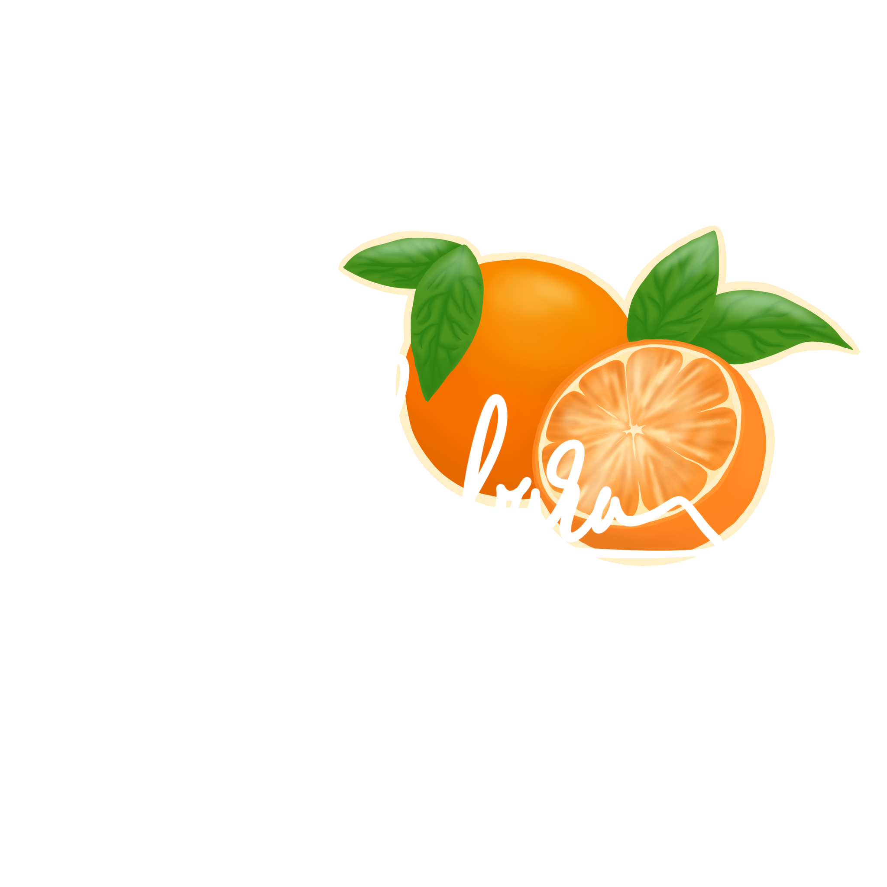
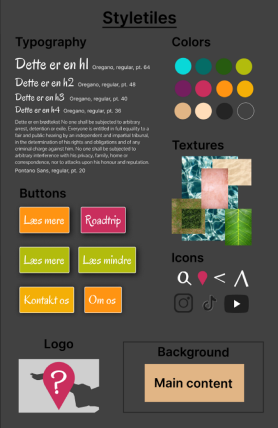
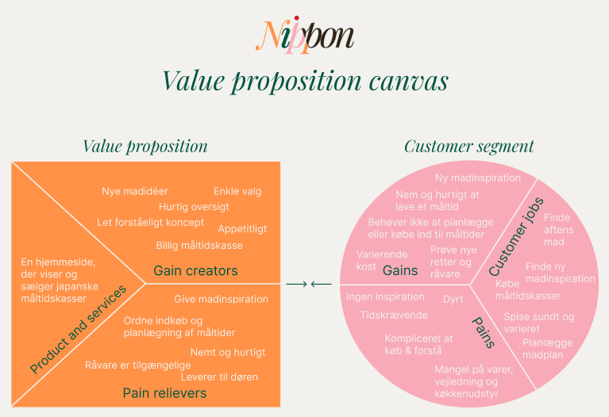
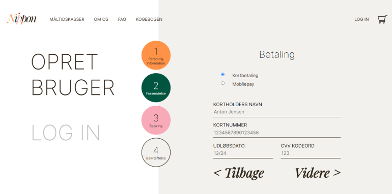
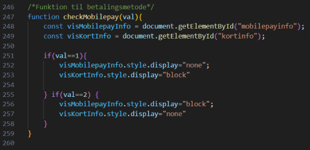
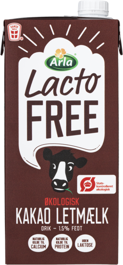

SE HVAD JEG KAN!
Vejle Fjords Ukendte Steder
Eksamensprojekt fra 1. semester
Vi fik til opgave at formidle tre hemmelige steder, der har sammenhæng, på et oplevelseswebsite. Jeg valgte tre smukke, men mindre kendte steder langs Vejlefjord, fordi naturen er rigtig smuk og kan byde på meget forskelligt.
Velfungerende prototype
Sitet er overvejende responsive, men alligevel har versionerne samme visuelidentitet,
så man får den samme oplevelse uanset device.
Det var også første gang mediaquies blev rigtig vellykket for mig.
Det er det første projekt med færdig prototype, som jeg selv lavede.
Det har nogle designmæssige skønhedsfejl og meget få kodedele,
der ikke fungere optimalt, men ellers er det blevet præcis som jeg forstillede mig.
SE PROTOTYPEN
Proces
Websitet skulle give en stemning af ferie og sommer. Selv om man ikke holder ferie i udlandet kan man stadig godt udforske ukendte steder i Danmark. Her er mit Moodboard

Generelt havde jeg en rigtig god proces, hvor jeg fik arbejdet godt med alle detaljerne, så der ikke blev overladt noget til tilfældighederne. Det skyldes bl.a. mit udførlige styletile:
Nippon
Gruppeprojekt fra 2. semester

En måltidskasse med japansk mad, hvor der var fokus på brugerrejsen
og onboarding i processen i at tilmelde sig et betalings abonnement.
Vi skulle selv vælge en målgruppe og lave relevant reseach der understøttede målgruppens behov.
Vi valgte en målgruppe som var i starten af 30'erne, færdiguddannet og dermed en større økonomisk stabilitet.

For at blive skarpere på målgruppens behov udfyldte vi en VPC. Samtidig fik vi også præciseret gain creators og pain relievers, som hjælp os med at prioritere content på websitet.
Jeg stod for at kode siderne til “login” og “opret bruger” (mens de andre to i gruppen kodet andre sider). Prototypen er interaktiv, og det eneste der ikke er sat op i koden er submit, så informationerne ikke bliver gemt. Brugeren bliver taget godt i hånden med en tydelig proceslinje og userwriting i alle inputfelterne.
Jeg har også tilføjet en simpel onclick funktion i JavaScript, så brugerne bl.a. har mulighed for at vælge forskellig betalingsmetoder, men kun bliver eksponeret for den ene, så de samtidig ikke bliver forvirret.
SE PROTOTYPEN
Cocio LactoFree
Mockup i Photoshop
Dette er ikke et skoleprojekt og Cocio virksomheden har intet med mockupsne at gøre. Jeg kom på at lave emballage til en laktosefri udgave af Cocio, fordi flaskerne fornyligt var på tilbud, og fandt ud af, at deres “Delight” version heller ikke var laktosefri. Jeg har indiske rødder og derfor foretrækker min mave tit laktosefri produkter. På Cocios hjemmeside er billederne af deres produkter png filer. Jeg har downloadet en flaske og logo fra deres hjemmeside. Jeg har primært arbejdet med blending modes og selections i Photoshop Billedet af dåsen har jeg fra Pixabay.com
Research
Jeg undersøgte kort om Mathilde Kakomælk og Chokomel havde en laktosefri version, bare for at få inspiration til kommunikation af laktosefri kakaomælk. Chocomel har lavet en plantebaseret udgave og Mathildes version er udgået, da Arla (som Mathilde kakaomælk hører under) har lanceret LactoFree produkter.

Kilde: https://www.chocomel.com/da-dk/products/chocomel-plantebaseret-1-liters-karton
Kilde: https://www.arla.dk/produkter/arla-laktosefri/okologisk-kakao-letmaelk-15pct-1l-66625/
Jeg tænkte, at Cocio gerne vil have et produkt, der kan konkurrer med alle alternativer for traditionel kakaomælk uden Cocio skal gå for langt væk fra deres originale produkt. Derfor fandt jeg meget inspiration hos emballagen til Cocio Delight, da den visuelle identitet er en stor del af Cocio brandet, men samtidig skal der være tydelig forskel.
Her har Cocio brugt, brun, lyserød, lyseblå og en lysere gul end på original flasken. De har også brugt organiske former. Den lyseblå er en god kontrast til til den gule og skaber opmærksomhed, derfor vil jeg prøve at bruge grøn i samme nuance, der også kan skabe blikfang, men tage den lyseblå med så den visuelle identitet stadig skaber kontinuerlighed i alle Cocios produkter.
Portfolio
Eksamensopgave fra 3. semester
Jeg har valgt at tage mit eget portfolio med fordi det er en eksamensopgave på 3.semester,
der handler om personal branding.
Det har taget tid at formulere, hvad jeg godt kunne tænke mig at lave i praktikken,
da jeg indtil videre har været meget åben for UX, design og programmering.
Derfor er jeg også kommet frem til, at det selvfølgelig er det jeg skal i praktikken -
arbejde med projekter i flere dele af processen.

Derefter blev det en udfordring at skulle visualisere ønsker til praktikken og min personlighed,
uden at alle ord blev illustreret til små ikoner.
I og med jeg også viser mine private tegninger, er der nok illustration på siden,
så jeg vil hellere vise at jeg kan lave et brugervenligt webdesign.
I processen bruger jeg rigtig meget skitser, fordi de skaber et hurtigt overblik og en forståelse for elementernes forhold til hinanden.
Jeg skitser både til det design og programmering, fordi det er nemmere at gå i gang når man har noget visuelt og konkret.
Jeg elsker farver, særlig appelsin orange, fordi jeg associerer den med sol og varme,
hvilket gør mig rigtig glad. Jeg er også fascineret af alle citrusfrugters tværsnit,
så derfor er mit logo også to appelsiner bag min underskrift minunderskrift.
Mit billede i menuen med grafikken skal referer til den nu udgået Nikoline sodavand - en appelsin sodavand
Fordybelse i fritiden
I Min fritid kan jeg godt lide at tegne og male, og det har jeg gjort lige siden jeg var lille. I 2018 lavede jeg en instagram, hvor jeg deler mine værker med venner og familie, men kontoen er offentlig. For et par år siden anskaffet jeg mig en iPad, og er begyndt at lave illustrationer i Procreate også.
@nikolinefaaborg